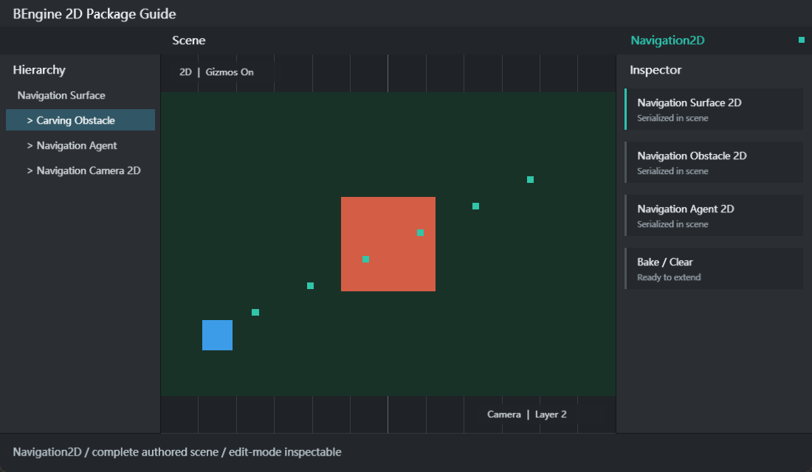

NavigationSurface2D
定义采样范围和网格精度。关键字段： agentTypeId、collectObjects、center、size、layerMask、useGeometry、cellSize、agentRadius、 buildOnStart。Context 菜单提供 Bake 与 Clear。
Navigation2D 将场景中的 2D Collider、Obstacle 和 Modifier 采样为确定性网格， Agent 使用 A* 计算路径并在固定点数坐标中移动。包依赖 Physics2D，启用本包时 Package Manager 会同时解析运行时依赖。

Assets/Examples/NavigationSurfaceAndAgent/res/Navigation.scene.yaml。修改障碍物后必须再次 Bake 或调用 UpdateNavigation。运行时烘焙只修改 Play 镜像， 不会保存到场景资源。
| 示例 | 场景内容 | 交互与学习点 |
|---|---|---|
| Navigation Surface And Agent | Surface、世界背景、Carving Obstacle、Agent、Camera2D | 首次烘焙、SamplePosition、SetDestination、自动到达目标；Space 切换终点。 |
| Dynamic Rebake | 可移动 Obstacle、自动重寻路 Agent、Surface、目标标记、Camera2D | Space 移动障碍物，UpdateNavigation 重建网格，Agent 重新计算路径。 |
每个示例都有独立 asmdef、详细 Readme、运行时脚本和可直接打开的 scene.yaml。可重复 Import； 对已修改文件默认保留本地改动，需要恢复原版时使用明确的覆盖重导入。
定义采样范围和网格精度。关键字段： agentTypeId、collectObjects、center、size、layerMask、useGeometry、cellSize、agentRadius、 buildOnStart。Context 菜单提供 Bake 与 Clear。
沿路径移动。配置 radius、speed、acceleration、 angularSpeed、stoppingDistance、autoBraking、autoRepath、updatePosition、updateRotation、 areaMask 与 avoidance quality。
Box/Circle 动态障碍。center、size/radius、 carving 与 carveOnlyStationary 决定烘焙时的阻挡形状。
NavigationLink2D 连接 startPoint/endPoint，可双向并设置 cost； Modifier2D 可结合 Collider 覆盖区域；ModifierVolume2D 以 center/size 标记 Area。
| 参数 | 影响 | 建议 |
|---|---|---|
| cellSize | 越小路径越精细，节点数和烘焙成本越高 | 从角色直径的 1/2 开始 |
| agentRadius | 对阻挡区域增加安全边距 | 与 Agent radius 保持一致 |
| stoppingDistance | 到目标多近才结束路径 | 避免小于一个 Fix64 有效步长 |
| layerMask | 选择参与 Surface 收集的世界层 | 只包含导航几何层，减少误阻挡 |
| API | 用途 |
|---|---|
| Navigation2D.CalculatePath(source, target, mask, path) | 计算路径并写入 NavigationPath2D。 |
| Navigation2D.SamplePosition(point, out hit, distance, mask) | 将任意点吸附到最近可行走网格。 |
| agent.SetDestination(target) | 计算并采用目标路径，返回是否成功。 |
| agent.SetPath / ResetPath / Warp | 采用自定义路径、清除路径或瞬移并清除旧路径。 |
| surface.BuildNavigation / UpdateNavigation / RemoveData | 构建、重建或清除运行时网格。 |
using BEngine.Navigation2D;
using Nav = BEngine.Navigation2D.Navigation2D;
public sealed class ClickToMove : MonoBehaviour
{
private NavigationAgent2D? agent;
public override void Awake() => agent = GetComponent<NavigationAgent2D>();
public void MoveTo(Vector2 requested)
{
if (agent is null) return;
var target = Nav.SamplePosition(requested, out var hit, 2)
? hit.position
: requested;
if (!agent.SetDestination(target))
Debug.LogWarning("No complete path to target.");
}
}在 Editor asmdef 引用 Navigation2D.Editor，使用 MenuItem 把命令放到 Tools/项目名 下； 通过 Selection.activeGameObject 获取目标，在修改场景组件后标记场景为已修改。外部组件可实现 OnDrawGizmosSelected 绘制目标与路径，用户可在 Scene 的 Gizmos 菜单按组件类型开关。
| SetDestination 返回 false | 确认 Surface 已 Bake、源点/终点可采样、Area Mask 匹配且对象属于同一运行场景。 |
|---|---|
| Agent 穿过障碍 | 确认 Obstacle carving 开启，或 Collider 位于 Surface.layerMask；移动后重烘焙。 |
| 路径贴墙 | 增大 Surface.agentRadius 或 Agent.radius，减小 cellSize 后重烘焙。 |
| Scene 没有 Gizmos | 开启 Scene Gizmos，并在类型列表启用 NavigationSurface2D/Agent/Obstacle/Link。 |
| 停止 Play 后数据消失 | 这是运行时镜像隔离的预期行为；在编辑模式配置并保存资源。 |